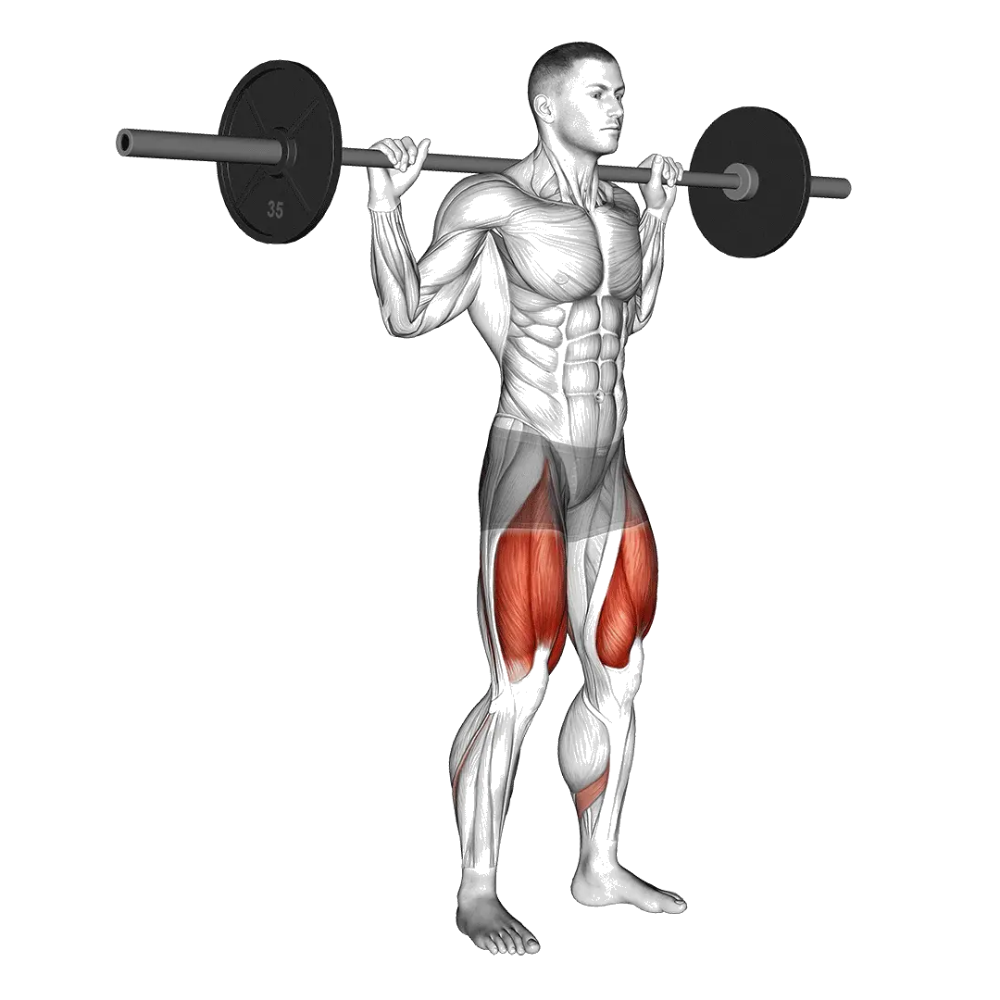

Half squat
Half squat permet de consulter la charge moyenne et les standards de force comme repères pour jambes. Les muscles principaux sont Quadriceps, Grand fessier.

Poids moyen : Intermédiaire
Repère pour une personne de niveau intermédiaire.
Hommes
309 lb
Femmes
177 lb
Poids moyen de Half squat [1RM]
| Niveau | ||
|---|---|---|
| Débutant | 155 lb | 75 lb |
| Novice | 223 lb | 119 lb |
| Intermédiaire | 309 lb | 177 lb |
| Avancé | 408 lb | 246 lb |
| Élite | 516 lb | 323 lb |
Note : ces standards sont des estimations de 1RM basées sur des pratiquants moyens. Ils peuvent varier selon le poids de corps, l'âge et d'autres facteurs personnels. Consulte les données détaillées dans le tableau ci-dessous.
Standards de force de Half squat (lb)
Hommes par poids de corps (lb) [1RM]
| Poids de corps | Débutant | Novice | Intermédiaire | Avancé | Élite |
|---|---|---|---|---|---|
| 110 | 82 | 126 | 182 | 248 | 321 |
| 120 | 96 | 143 | 203 | 272 | 349 |
| 130 | 110 | 160 | 223 | 296 | 375 |
| 140 | 124 | 177 | 242 | 318 | 400 |
| 150 | 137 | 193 | 261 | 339 | 424 |
| 160 | 150 | 208 | 279 | 360 | 447 |
| 170 | 163 | 224 | 297 | 380 | 469 |
| 180 | 176 | 238 | 314 | 399 | 490 |
| 190 | 189 | 253 | 330 | 418 | 511 |
| 200 | 201 | 267 | 347 | 436 | 531 |
| 210 | 213 | 281 | 362 | 454 | 551 |
| 220 | 225 | 295 | 378 | 471 | 570 |
| 230 | 236 | 308 | 393 | 488 | 588 |
| 240 | 248 | 321 | 407 | 504 | 606 |
| 250 | 259 | 333 | 421 | 520 | 623 |
| 260 | 270 | 346 | 435 | 535 | 640 |
| 270 | 281 | 358 | 449 | 550 | 657 |
| 280 | 291 | 370 | 462 | 565 | 673 |
| 290 | 302 | 381 | 475 | 579 | 688 |
| 300 | 312 | 393 | 488 | 593 | 704 |
| 310 | 322 | 404 | 501 | 607 | 719 |
Hommes par âge [1RM]
| Âge | Débutant | Novice | Intermédiaire | Avancé | Élite |
|---|---|---|---|---|---|
| 15 | 132 | 190 | 263 | 348 | 439 |
| 20 | 151 | 218 | 301 | 398 | 503 |
| 25 | 155 | 223 | 309 | 408 | 516 |
| 30 | 155 | 223 | 309 | 408 | 516 |
| 35 | 155 | 223 | 309 | 408 | 516 |
| 40 | 155 | 223 | 309 | 408 | 516 |
| 45 | 147 | 212 | 293 | 387 | 489 |
| 50 | 138 | 199 | 275 | 363 | 459 |
| 55 | 127 | 184 | 254 | 336 | 425 |
| 60 | 116 | 168 | 232 | 307 | 388 |
| 65 | 105 | 152 | 210 | 277 | 350 |
| 70 | 94 | 136 | 188 | 249 | 314 |
| 75 | 84 | 122 | 168 | 222 | 281 |
| 80 | 75 | 109 | 150 | 199 | 251 |
| 85 | 67 | 97 | 135 | 178 | 225 |
| 90 | 61 | 88 | 122 | 161 | 203 |
Femmes par poids de corps (lb) [1RM]
| Poids de corps | Débutant | Novice | Intermédiaire | Avancé | Élite |
|---|---|---|---|---|---|
| 90 | 47 | 81 | 126 | 182 | 245 |
| 100 | 53 | 89 | 137 | 195 | 260 |
| 110 | 60 | 98 | 147 | 207 | 274 |
| 120 | 66 | 105 | 157 | 219 | 287 |
| 130 | 72 | 113 | 166 | 229 | 299 |
| 140 | 78 | 120 | 175 | 240 | 311 |
| 150 | 83 | 127 | 183 | 249 | 322 |
| 160 | 88 | 134 | 191 | 258 | 332 |
| 170 | 94 | 140 | 198 | 267 | 342 |
| 180 | 99 | 146 | 206 | 276 | 352 |
| 190 | 103 | 152 | 213 | 284 | 361 |
| 200 | 108 | 158 | 219 | 291 | 370 |
| 210 | 113 | 163 | 226 | 299 | 378 |
| 220 | 117 | 169 | 232 | 306 | 386 |
| 230 | 122 | 174 | 238 | 313 | 394 |
| 240 | 126 | 179 | 244 | 320 | 402 |
| 250 | 130 | 184 | 250 | 327 | 409 |
| 260 | 134 | 188 | 256 | 333 | 416 |
Femmes par âge [1RM]
| Âge | Débutant | Novice | Intermédiaire | Avancé | Élite |
|---|---|---|---|---|---|
| 15 | 64 | 102 | 151 | 210 | 275 |
| 20 | 73 | 116 | 173 | 240 | 315 |
| 25 | 75 | 119 | 177 | 246 | 323 |
| 30 | 75 | 119 | 177 | 246 | 323 |
| 35 | 75 | 119 | 177 | 246 | 323 |
| 40 | 75 | 119 | 177 | 246 | 323 |
| 45 | 71 | 113 | 168 | 234 | 306 |
| 50 | 67 | 106 | 158 | 219 | 287 |
| 55 | 62 | 98 | 146 | 203 | 266 |
| 60 | 56 | 90 | 133 | 185 | 243 |
| 65 | 51 | 81 | 120 | 167 | 219 |
| 70 | 46 | 73 | 108 | 150 | 197 |
| 75 | 41 | 65 | 97 | 134 | 176 |
| 80 | 37 | 58 | 86 | 120 | 157 |
| 85 | 33 | 52 | 77 | 108 | 141 |
| 90 | 30 | 47 | 70 | 97 | 127 |
Note : une barre standard de salle de sport pèse généralement 44 lb.
Muscles ciblés
| Groupe | Muscles |
|---|---|
| Muscles principaux | Quadriceps, Grand fessier |
| Muscles secondaires | Ischio-jambiers, Adducteurs |
| Stabilisateurs | Obliques externes, Érecteurs du rachis |
| Prise | Aucun |
Suivi et analyse dans l'app Shiba
Consultez poids, répétitions et progression au même endroit.
Comment lire le tableau
| Niveau | Description | Répartition |
|---|---|---|
| Débutant | Maîtrise la bonne technique et s'entraîne régulièrement depuis au moins 1 mois. | Bas 5% |
| Novice | S'entraîne régulièrement depuis au moins 6 mois. | Top 80% |
| Intermédiaire | S'entraîne régulièrement depuis au moins 2 ans. | Top 50% |
| Avancé | S'entraîne régulièrement depuis plus de 5 ans. | Top 20% |
| Élite | S'entraîne spécifiquement sur cet exercice depuis plus de 5 ans. | Top 5% |
Autres exercices
Jambes
Glute ham raise
Jambes
Leg extension à la poulie
Jambes / Poulie
Assis élévation mollets une jambe
Jambes
Fente latérale
Jambes
Kickback fessier
Jambes
Mollets donkey
Jambes
Marché élévation mollets aux haltères
Jambes / Haltères
Relevé latéral de jambe
Jambes / Poids du corps
Squat Jefferson
Jambes
Au sol abduction de hanche
Jambes
Extension de hanche
Jambes
Au sol extension de hanche
Jambes